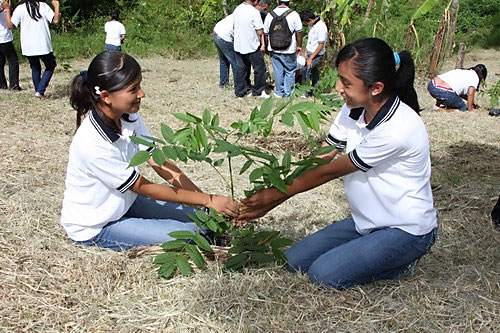
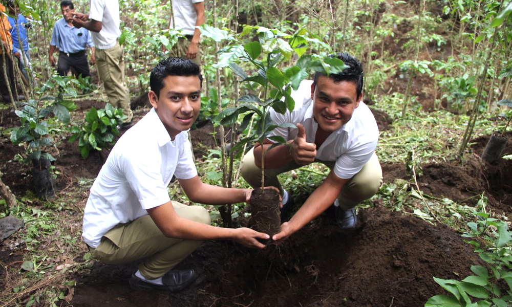
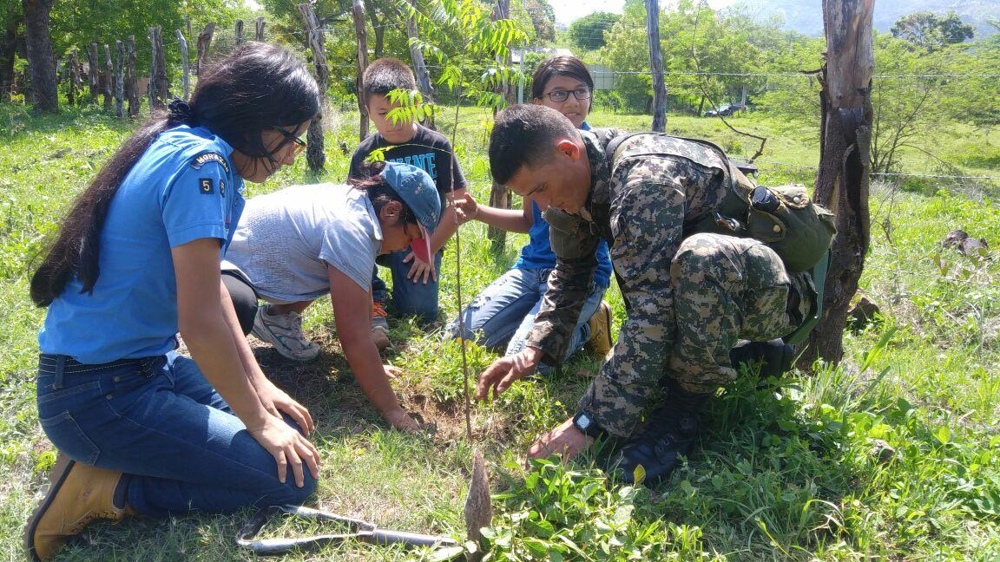

TU PUEDES MARCAR LA DIFERENCIA
te mostraremos formas para que ayudes al medio ambiente desde tu hogar con consejos y muchas actividades como:
-Guia practica para reciclar?
-La importancia de sembrar un Árbol.
-ECO-tips
ECOTERRA
Ecologia en El Salvador
Vamos a RECICLAR
Guia practica para reciclar
ECOTIPS
Razones para plantar un Arbol
¿Cuanto dura tu basura?
Curiosidades del reciclaje
Los paises ecologicos
La ciudad Ecologica: Kamikatsu
Cuidemos JUNTOS el planeta
  